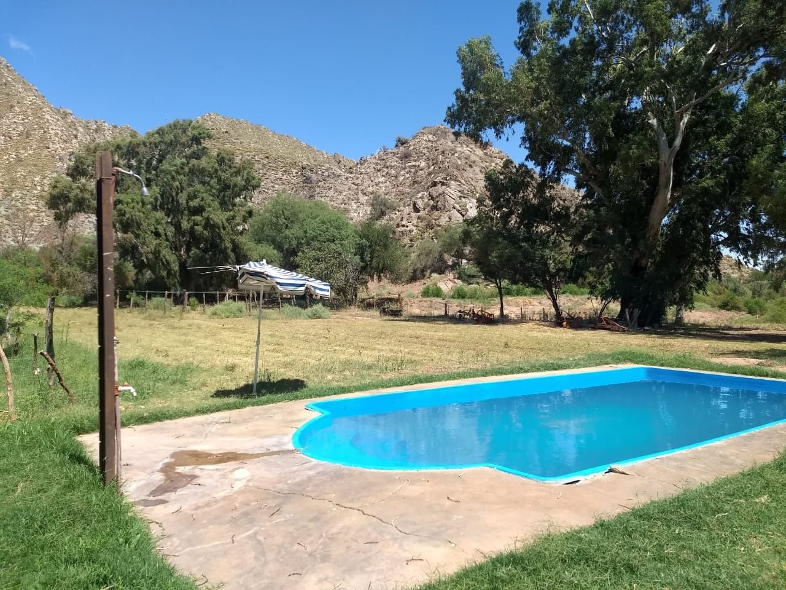
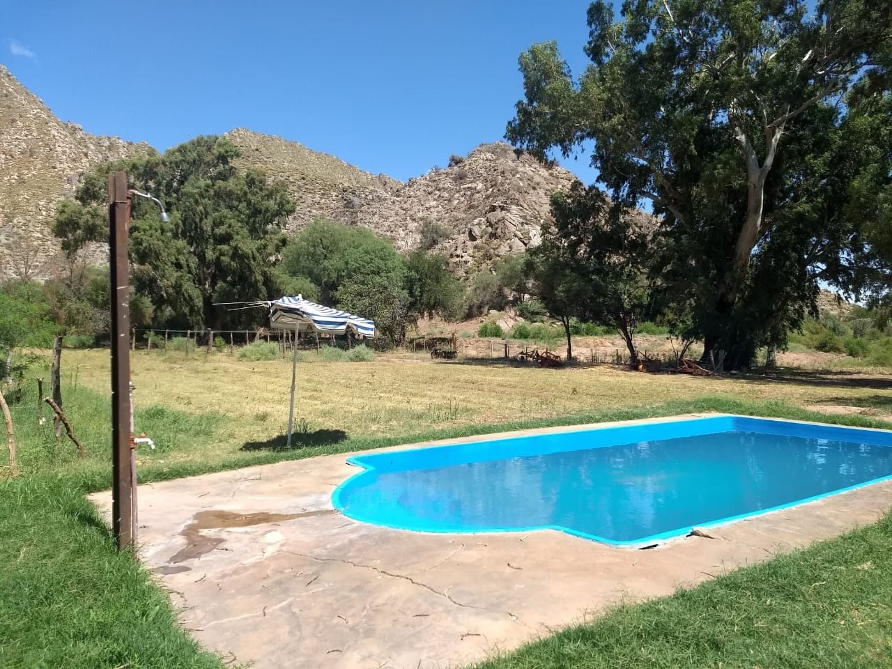
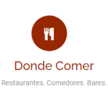
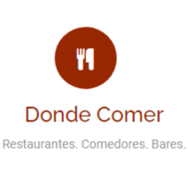

| Alojamiento | Dirección | Telefono |
|---|---|---|
| Hotel Santé | 25 de mayo 53 SUR. A dos cuadras y media de la plaza principal |
3837-471798 jaledcabur@hotmail.com.ar - santehostal@live.com |
| Hotel Nicolas | Pte. Perón 231 | 03837-420028 |
| Hotel de Turismo | 25 de Mayo Esq. Moreno | 03837-421088 |
| Hotel Casa Grande | Moreno 801 | 03837-421140 / 1168404638 |
| Hotel San José | Dr. Antonio del Pino 425 | 03837-693628 |
| Hotel María Elena | El Puesto | |
| Las Pircas Hotel Boutique |
Anillaco | 3835 483176 |
| Hostal Sisabel | Calle 12 de Octubre B° Jardin |
03837 434672 / 2974430419 |
| Hostal Las Parinas | Moreno 439 | 03837-420416 |
| Hosteria Novel | Av. Córdoba 200 | 03837-435314 |
| Hosteria El Antigal | Copacabana | 03837-15414944 |
| Residencia el Viajante | Av. Illia s/n | 03837-420830 |
| Residencia San Francisco | Moreno 784 | 03837-475201 |
| Residencia El Emperador | Catamarca 655 | 03837-420702 |
| Casa de Campo "El Solar de los Olivos" |
Copacabana | 03834 324006 / 471798 |
| Casa de Campo "La Sala" | La Puntilla | 03837-15407912 |
| Cabañas de la Aguadita | Termas la Aguadita | 351 2333917 |
| Cabañas el Zorro Gris | Villa San Roque | 03834-334812 |
| Cabañas Los Orquera | El Puesto | 03834-755666 |
| Cabañas del Indio | Mariano Moreno N°165 | 2477506301 / 3837404832 |
| Arrebol Complejo Apart | 3837-471565 / 3834 032105 | |
| Casa Blanca | La Puntilla (Ruta Nac. N°60) |
03837-476008 / 2974227071 |
| Hostal Munay | Copacabana | 3837 400498 |
| Hostal La Mónica | Copacabana | 383 4562629 |
| Hospedaje Huguito | Copiapó número 86 | vanessa: 383 748 6840 |
| Cabañas burro con pan | calle tucumán prolongación oeste sin número |
vanessa: 383 748 6840 |
El hostal esta compuesto por 10 habitaciones de las cuales 7 se encuentran en la parte inferior y 3 en 1 piso acceso por escalera. todas las habitaciones cuentan con, baño privado, tv, wifi, aire acondicionado frio calor. heladera frigobar. Nuestros baños son amplios, y contamos con una habitacion adaptada para personas con discapacidad motris ( siempre consultar disponibilidad) los baños estan provistos de bidet, secador de pelo. en nuestras instalaciones contamos con wi-fi en todo el establecimiento. servicio de estacionamiento, patio, bar kincho con asadores y acceso a una cocina de uso comun
Ubicacion: 25 de mayo 53 SUR. a dos cuadras y media de la plaza principal
Datos de Contacto Whatsapp : +5493737471798
Mail : jaledcabur@hotmail.com.ar santehostal@live.com


Casagrande Hotel de Adobe, es un hotel boutique con Piscina, Jacuzzi, Restaurante y Winery. Ubicado a 200mts de la plaza principal, forman parte de La Ruta del Adobe con un casco historico del año 1890.
Pagina Web: https://www.casagrandetour.com
Ubicacion: Moreno 801
Datos de Contacto Whatsapp : +5493837438317
Mail : Info@casagrandetour.com
Telefono Fijo : 03837 421140


El proyecto CABAÑAS del INDIO nace en el amor y agradecimiento a mi pueblo Tinogasteño.
Este esfuerzo familiar en ejecución está orientado a brindar los mejores servicios al turismo.
Para ello ya contamos con un bloque de dos cabañas, entre otras en marcha, que ya está habilitada y consta de:
Cocina-comedor equipada con una mesa, cinco sillas, heladera, horno eléctrico con dos anafes, TV led de 30',
ventilador de techo de madera. -- Dos dormitorios.
Uno de ellos está equipado con un somier de 2 1/2 plazas, mesa de luz, veladores, aire acondicionado Split
frío/calor. El otro dormitorio tiene dos somier de 1 1/2 plaza, mesa de luz, velador, aire acondicionado Split
frío/calor.
Cocina-comedor equipada con una mesa, cinco sillas, heladera, horno eléctrico con dos anafes, TV led de 30',
ventilador de techo de madera. -- Dos dormitorios. Uno de ellos está equipado con un somier de 2 1/2 plazas,
mesa de luz, veladores, aire acondicionado Split frío/calor. El otro dormitorio tiene dos somier de 1 1/2 plaza,
mesa de luz, velador, aire acondicionado Split frío/calor.
Cada cabaña con su correspondiente baño y ante baño, termotanque.
Hay mata fuego en cada cabaña.
Cada cabaña tiene su asados y su quincho parrillero que tambien sirve de proteccioón al auto.
Si bien son cabañas para cuatro personas, hay espacio suficiente para agregar otro somier si hiciera falta.
También se cuenta con un servicio completo de vajilla y toilette.
En breve habilitaremos otro bloque de cabañas de un dormitorio y el salón de recepción.
Nuestras cabañas se encuentran en calle Moreno 165.
FORMAS DE PAGO: Efectivo, Tarjetas de Crédito y débito, Transferencia bancaria.


"Hotel Nicolas" (Tinogasta/Catamarca) es un emprendimiento familiar. FUE CREADO EN EL AÑO 1963 POR SU DUEÑO DON NICOLAS OLIVERA Y SU SEÑORA ESPOSA DALMIRA NIEVA DE OLIVERA. ERA UNA CASA MUY GRANDE DONDE VIVÍA CON SU FAMILIA. TODO COMENZÓ CUANDO UN DÍA CONVERSANDO CON VIAJANTES QUIENES LE COMENTARON QUE NO HABIA LUGAR PARA ALOJARSE, DECIDE ABRIR LAS PUERTAS DE SU HOGAR PARA DAR VIDA AL HOTEL NICOLAS Y TAMBIEN BRINDAR EL SERVICIO DE ALMUERZO Y CENA A SUS CLIENTES.
Ubicado en calle Presidente Perón 231 y cuenta con los siguientes servicios:
-Habitaciones con baño privado
- Aire acondicionado/calefacción
- Televisión por cable
- Wifi
- Desayuno incluido
- Playa de estacionamiento
- Limpieza/Lavandería
- Atención personalizada las 24 hs.
-FORMAS DE PAGO: Efectivo. Depósitos o Transferencias.
Contacto:
- Teléfono fijo: (03837) 420028
- Celular: (03834) 15525626
- E-mail: hotelnicolastinogasta@gmail.com


Dirección:
Ruta Nacional 60 Km. 1341, Catamarca, 5341 Tinogasta, Argentina.
YouTube:
https://www.youtube.com/watch?v=SNbziBHv_kw
Telefono: 3835483176

Hotel Hacienda Casa Blanca, ubicado a solo 5 km de Tinogasta. Es una finca de 70 has que brinda servicio de Alojamiento y restaurant, en una casona de adobe del Siglo XVIII, puesta en valor, con suites súper amplias con todo el confort y los servicios para que el huésped tenga un excelente descanso y experimente una conexión única con el entorno. En la misma se pueden realizar actividades como cabalgatas y trekking. Ideal para aquellos amantes del turismo rural.
Facebook:
https://www.facebook.com/Complejo-Casa-Blanca-592390097927691/
UBICACIÓN: LA PUNTILLA
TEL.: 3837-421140 / CEL. 3837-438317
INSTAGRAM: casablancacomplejo G
FACEBOOK: Complejo casa Blanca
SERVICIOS:
-HABITACIONES CON TV DIRECTV
-HABITACIONES CON AIRE ACONDICIONADO FRIO/CALOR
-ESTACIONAMIENTO
-BAÑO PRIVADO
-DESAYUNO INCLUIDO
-SERVICIO DESPERTADOR
-FORMAS DE PAGO: Efectivo, y Transferencia bancaria
-PILETA
-CABALGATAS
-CAMINATAS
-SERVICIO DE ALMUERZO O CENA FUERA DEL COSTO DE ALOJAMIENTO

 

INICIÓ SU ACTIVIDAD EL 02 DE JULIO DEL AÑO 2019. SUS DUEÑOS, LOS HERMANOS VERÓNICA, GUILLERMO, MARCELA Y
GABRIELA SESTO, PONEN EN VALOR LA CASA PATERNA DE LA FAMILIA PARA QUE FUNCIONE COMO HOSTAL, LA CASONA POSEE LOS
MUEBLES ORIGINALES PERTENECIENTES SU FAMILIA.
Nuestro hostal cuenta con 5 habitaciones con camas de 1 y 2 plazas y 2 baños para compartir, la capacidad máxima
es para 12 personas.
Todas las habitaciones cuentan con aire acondicionado frío/calor y se encuentran en un primer piso, hay que
subir por escaleras para acceder a ellas.
Los servicios incluidos en el precio son:
-WIFI
-HABITACIONES CON TV CABLE
-HABITACIONES CON AIRE ACONDICIONADO FRIO/CALOR
-SIN ESTACIONAMIENTO
-DESAYUNO INCLUIDO
-SERVICIO DESPERTADOR
-FORMAS DE PAGO: Efectivo, Tarjetas de Crédito y Débito. -Transferencias.
-COCINA EQUIPADA COMPLETA CON BATERIA DE COCINA Y VAJILLA.
-BAÑO COMPARTIDO
El hostal tiene muy buena ubicación ya que se encuentra a una cuadra de la plaza principal y casco céntrico de
la ciudad.
Dirección: MORENO 518 Tinogasta – Catamarca
Celulares de contacto: 3837-473166 / 3837-404107 / 3837-435183
Email: hostallossesto@gmail.com
Facebook: Hostal Los Sesto
UBICACIÓN: MORENO 748
TEL.: 3837-475201
SERVICIOS:
-HABITACIONES CON TV CABLE
-ESTACIONAMIENTO
-WIFI: A consultar
-HABITACIONES CON AIRE ACONDICIONADO FRIO/CALOR: A consultar
-SERVICIO DESPERTADOR
-FORMA DE PAGO: Sólo efectivo
-BAÑO PRIVADO
-NO INCLUYE EL DESAYUNO
UBICACIÓN: Catamarca 655
TEL.: 3837-404151 / 3837-420702
SERVICIOS:
-WIFI
-BAÑO PRIVADO
-HABITACIONES CON TV CABLE
-HABITACIONES CON AIRE ACONDICIONADO FRIO/CALOR EN LA MAYORIA DE LAS HABITACIONES. LAS OTRAS TIENEN AIRE FRIO Y
ESTUFAS.
-ESTACIONAMIENTO
-DESAYUNO INCLUIDO
-SERVICIO DESPERTADOR
-FORMAS DE PAGOS: Efectivo
RESEÑA HISTORICA:
INICIÓ SU ACTIVIDAD EN EL AÑO 2000, SU DUEÑO JULIO CÉSAR ARIAS TUVO EL SUEÑO DE INVERTIR EN TINOGASTA, COMENZÓ
CONSTRUYENDO 13 HABITACIONES LAS CUALES DIERON VIDA AL RESIDENCIAL, PARA LUEGO AMPLIAR Y LLEGAR A LAS 22
HABITACIONES QUE EN LA ACTUALIDAD TIENE. AHORA, EL MISMO ESTÁ A CARGO DE SU SOBRINO DANIEL VALDIVIESO.
UBICACIÓN: Posee 2 ingresos, uno por Villa San Roque y otro por la Ruta 60 KM. 1338
TEL.: 383-4334948
PÁGINAS/E-MAIL: www.elzorrogris.com.ar / reservas@elzorrogris.com.ar
SERVICIOS:
-WIFI
-LAS HABITACONES NO POSEEN TV. EL MISMO SE ENCUENTRA EN EL SALÓN GENERAL
-BAÑO PRIVADO
-HABITACIONES CON AIRE ACONDICIONADO FRIO/CALOR
-ESTACIONAMIENTO
-DESAYUNO INCLUIDO
-SERVICIO DESPERTADOR
-PILETA
-FORMAS DE PAGO: Efectivo. Tarjetas de Crédito y Débito. Mercado Pago.
-OFRECE ACTIVIDADES ALTERNATIVAS: CABALGATAS, CAMINATAS, DEGUSTACIÒN DE VINOS, ALQUILER DE BICICLETAS.
-ESTÁ COMPUESTO POR 2 CABAÑAS CON COCINA COMPLETA Y 3 DORMIS.
-ALMUERZO, MERIENDA Y CENA SÓLO A PEDIDO DEL CLIENTE. COSTO ES APARTE.
RESEÑA HISTORICA
LA IDEA INICIAL DE SU DUEÑA EGLE ALTAMIRANO, ERA CREAR UNA BODEGA Y TENER DISPONIBLE 3 DORMIS LOS CUALES
ALQUILARON, CON EL TIEMPO FUERON DESCUBRIENDO EL POTENCIAL QUE TENIA EL TURISMO EN TINOGASTA Y CONSTRUYERON LAS
2 CABAÑAS EN LA LOCALIDAD DE VILLA SAN ROQUE.
UBICACIÓN: DR. ANTONIO DEL PINO 425
TEL.: 3837 698171
PÁGINAS/E-MAIL: pabloivangonzalez@gmail.com
SERVICIOS:
-WIFI
-HABITACIONES CON TV CABLE
-HABITACIONES CON AIRE ACONDICIONADO
-BAÑO PRIVADO
-ESTACIONAMIENTO
-NO INCLUYE DESAYUNO
-SERVICIO DESPERTADOR
-FORMAS DE PAGOS: Efectivo
RESEÑA HISTORICA
SU CONSTRUCCIÓN COMIENZA EN EL AÑO 1950 Y LA FINALIZACIÓN DE SU CONSTRUCCIÓN SE FINALIZA EN EL AÑO 1980. EL
HOTEL PASÓ DE GENERACIÓN EN GENERACIÓN HASTA SUS ACTUALES DUEÑOS.
UBICACIÓN: El Puesto
TEL.: 383-4755666 / 3837-690702
PÁGINAS/E-MAIL: www.posadalosorquera.com.ar
SERVICIOS:
LAS CABAÑAS:
-POSEEN TV DIRECTV
-BAÑO PRIVADO
-COCINA COMPLETA CON VAJILLA
LA POSADA:
-TV DIRECTV UNICAMENTE EN EL DESAYUNADOR
-BAÑO PRIVADO
-ESTACIONAMIENTO
-DESAYUNO INCLUIDO
-SERVICO DESPERTADOR
-FORMAS DE PAGO: Efectivo y transferencias bancarias.
-ALMUERZO, MERIENDA Y CENA SÓLO A PEDIDO DEL CLIENTE Y EL COSTO ES APARTE.
RESEÑA HISTORICA
SE TRATA DE UN EMPRENDIMIENTO FAMILIAR EL CUAL BUSCA MINETIZARSE CON EL ESTILO DE CONSTRUCCIÓN COMÚN DE LA
LOCALIDAD DE EL PUESTO, EL CUAL SE CARACTERIZA POR EL USO DE PIEDRA Y ADOBE COMO MATERIAL DE CONSTRUCCIÓN. DE
FAMILIA ANCESTRAL EN EL LUGAR DESCENDIENTES DE DOÑA MANUELA Y DOÑA MARTINA ASIARIS ENCARGADAS DE LA CONSTRUCCIÓN
DEL ORATORIO DE LOS ORQUERA DEL AÑO 1740.
UBICACIÓN: Copacabana
TEL.: 3837-414944
PÁGINAS/E-MAIL: amontiel@gmail.com / graantigal@gmail.com
SERVICIOS:
-WIFI
-HABITACION CON AIRE ACONDICIONADO FRIO/CALOR
-ESTACIONAMIENTO
-BAÑO PRIVADO
-DESAYUNO INCLUIDO
-PILETA
-ASADORES
-BAR
-PERGOLA
-SERVICO DESPERTADOR
-FORMAS DE PAGO: Efectivo. Tarjetas de Crédito y Débito.
-ACTIVIDADES ALTERNATIVAS: Rincón infantil, patio matero.
-SERVICIO DE ALMUERZO, MERIENDA Y CENA A PEDIDO DEL CLIENTE, EL COSTO ES APARTE.
RESEÑA HISTORICA
CASONA DE CAMPO CON GRAN POTENCIAL TURISTICO, INICIA SUS ACTIVIDADES EN EL AÑO 2013 Y A LA FECHA SE ENCUENTRA
TOTALMENTE REMODELADO CON UNA GRAN PUESTA EN VALOR HACIA EL TURISTA. EMPRENDIMIENTO QUE APUNTA A EL DESARROLLO
DEL TRABAJO GENUINO FOCALIZADO EN LA LOCALIDAD DE COPACABANA.
UBICACIÓN: CALLE 12 DE OCTUBRE – BARRIO JARDÍN
TEL.: 3837-434672
PÁGINAS/E-MAIL: hostalsisabel@gmail.com
SERVICIOS:
-WIFI
-HABITACIONES CON TV CABLE
-HABITACIONES CON AIRE ACONDICIONADO FRIO/CALOR
-BAÑO PRIVADO
-COCINA COMPARTIDA COMPLETA CON VAJILLA Y BATERIA DE COCINA
-ESTACIONAMIENTO
-DESAYUNO INCLUIDO
-SERVICO DESPERTADOR
-FORMAS DE PAGO: Efectivo, Débito y Transferencias.
-SERVICIO DE ALMUERZO, MERIENDA Y CENA A PEDIDO DEL CLIENTE CON UN COSTO APARTE.
RESEÑA HISTORICA
FUE CREADO PENSANDO EXCLUSIVAMENTE PARA EL TURISTA QUE DESEA TRANSITAR UNA ESTADIA CÓMODA Y AGRADABLE. ABREN SUS
PUERTAS EN ENERO DEL AÑO 2016, CON EL OBJETIVO DE BRINDAR LO MEJOR DE TINOGASTA A CADA VISITANTE.
UBICACIÓN: AV. CÓRDOBA 200
TEL.: 3837-435314
SERVICIOS:
-WIFI
-HABITACIONES CON TV
-HABITACIONES CON AIRE ACONDICIONADO
-ESTACIONAMIENTO
-DESAYUNO INCLUIDO
-SERVICO DESPERTADOR
-PATIO Y SALON DE FIESTAS
-SERVICIO DE ALMUERZO Y CENA
RESEÑA HISTORICA
HOSTERIA NOVEL FUE CREADO POR LA FAMILIA PEÑALOZA EL 16 DE FEBRERO DE 1980. SIEMPRE ATENDIDO POR SUS PROPIOS
DUEÑOS SUMANDO HOSPEDAJE, COMEDOR Y LUGAR DE EVENTOS.
ACTUALMENTE OFRECE LOS MISMOS SERVICIOS A CARGO DE LA 2DA GENERACIÓN DE LA FAMILIA
UBICACIÓN: MORENO 439
TEL.: 3837-470136
PÁGINAS/E-MAIL: lasparinashostal@hotmail.com
SERVICIOS:
-WIFI
-HABITACIONES CON TV DIRECTV
-HABITACIONES CON AIRE ACONDICIONADO FRIO/CALOR
-ESTACIONAMIENTO
-BAÑO PRIVADO
-DESAYUNO INCLUIDO
-SERVICIO DESPERTADOR
-FORMAS DE PAGO: Efectivo, Tarjetas de Crédito y débito, Transferencia bancaria
-PRODUCTOS REGIONALES
-PILETA
-QUINCHO
RESEÑA HISTORICA
LAS PARINAS HOSTAL INICIO SUS ACTIVIDADES HACE MÀS DE UNA DÈCADA COMO UN HOTEL FAMILIAR, PRESENTÀNDOSE COMO UNA
CASONA DE ADOBE A METROS DE PLAZA PRINCIPAL.
TENIENDO COMO SELLO DISTINTIVO LA CALIDEZ EN LA ATENCIÒN PROPIA DE UNA FAMILIA TINOGASTEÑA.
UBICACIÓN: LA PUNTILLA RUTA 60 KM 1311
TEL.: 3837-421140 / CEL. 3837-438317
PÁGINAS/E-MAIL: osmarsaldaño@gmail.com
SERVICIOS:
-HABITACIONES CON TV DIRECTV
-HABITACIONES CON AIRE ACONDICIONADO FRIO/CALOR
-ESTACIONAMIENTO
-BAÑO PRIVADO
-DESAYUNO INCLUIDO
-SERVICIO DESPERTADOR
-FORMAS DE PAGO: Efectivo, Tarjetas de Crédito y débito, bancaria, Mercado Pago.
-SERVICIO DE ALMUERZO, MERIENDA Y CENA SÓLO A PEDIDO DEL HUESPED Y EL COSTO ES APARTE DE LA TARIFA DE
ALOJAMIENTO
-PILETA
OTROS:
-TREKKING
-SENDERISMO
-SALON DE FIESTAS
-RESTAURANTE
-CABALGATAS (tercerizado)
RESEÑA HISTORICA
CASONA DE 1850, COSTRUIDA POR EL CORONEL DARÌO FIGUEROA AL MANDO DEL GRAL. GUEMES BATALLANDO EN LA GUERRA DE
INDEPENDENCIA.
LUEGO EN 185. SE CASA CON MACEDONIA FIGUEROA Y CONSTRUYE ESTA CASONA CON LAS INICIALES DE AMBOS QUE SE
ENCUENTRAN EN EL FRENTE DE LAS PAREDES DE 80 CM DE ANCHO.
ESTA CASONA FUE COMPRADA POR EL DR. SALDAÑO EMPEZANDO LA PRODUCCIÒN AGRÌCOLA EN EL AÑO 1972 Y EN EL AÑO 2010 SE
DA INICIO A LA ACTIVIDAD TURÌSTICA.
UBICACIÓN: Copiapó número 86. - Tinogasta
contacto: Vanessa: 383 748 6840.
Una casa centrica a muy pocos pasos de la plaza princial en solo unos minutos vas a estar conociendo todo el
centro de tinogasta, ideal para quedarse y hacer todo el turimo que ofrece la ciudad de una manera comoda,
confortable y divertida.
Posee un espacio considerable para pasar unas lindas vacaciones en familia o un viaje de negocios,
en cualquier caso vas a tener todos los servicios para tener una estadia que cumpla con tus expectativas.
Te esperamos
UBICACIÓN: Calle Tucumán prolongación oeste sin número. - Tinogasta
un lugar con un paisaje hermoso, para conectar con la naturaleza y apreciar la belleza que tiene Tinogasta.
Es una casa confortable, segura, tranquila, ideal para relajarse y despejarse.
Te invitamos a pasarla bien aqui, y disfrutar en familia.
Te esperamos


 



Conoce todo el Departamento de Tinogasta desde esta increíble Galería de Fotos de sus atractivos, rutas, y sus lugares mas bellos.
Galeria de imágenes Muestra fotográfica
infoturismotinogasta@gmail.com
Turismo Tinogasta
@turismo.tinogasta
3837-430666